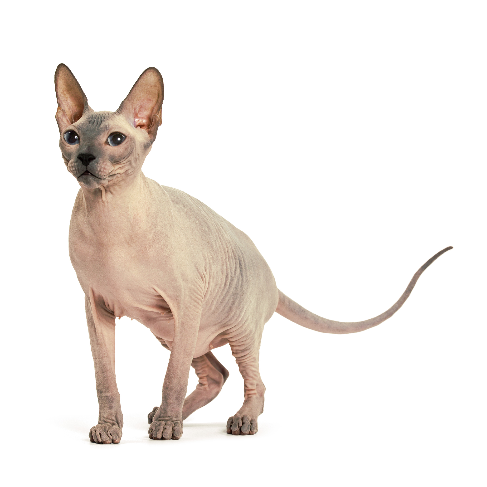

Донской сфинкс
Характеристика
| Образ жизни | В помещении |
| Тип шерсти | Беcшерстная |
| Размер | Средний |
| Образ жизни | В помещении |
| Тип шерсти | Беcшерстная |
| Размер | Средний |
Сфинксы – бесшерстные кошки среднего размера. Встречается несколько разновидностей. В описании породы донского сфинкса браш сказано, что у него короткая щетинистая шерсть разнообразных окрасов. Иногда она может быть завитой или даже волнистой. Волоски имеют длину не более 5 мм. Кожа мягкая, бархатистая на ощупь, со складками на морде, под подбородком и на некоторых участках туловища. Одной из типичных характеристик этих кошачьих являются их конечности: изящные, стройные, с овальными лапами и длинными подвижными пальцами. Голова в форме удлиненного клина, уши высокие, глаза миндалевидной формы. Хвост длинный, прямой и гибкий. Существует еще одна разновидность "дончан". В описании породы велюрового донского сфинкса говорится, что его тело покрыто короткими волосками длиной не более 2 мм. Отличие от браша не только в длине волосков, но и в их расположении. У велюровой разновидности они растут близко друг к другу, а у браша являются довольно редкими. При этом в описании характера породы донских сфинксов разных видов и в условиях их содержания нет никаких различий.
Донской сфинкс – кошка загадочная, элегантная и любознательная. Она активна, чрезвычайно дружелюбна, сообразительна и ласкова, доброжелательна и очень преданна владельцу. Она не требует сложного ухода, а характер у нее уравновешенный и мягкий. Эти животные проявляют живой интерес к окружению и любят играть, самостоятельно изобретая все новые развлечения. При этом по своему характеру донские сфинксы очень общительны и дружелюбны. Они с удовольствием показываются гостям и хорошо уживаются с собаками и другими животными.
Этот вид домашних питомцев ведет свою историю из России. В 1987 году жительница Ростова-на-Дону Елена Ковалева нашла на улице молодую кошечку с выпадающей шерстью. Примерно к году шерсть выпала окончательно, и поначалу предполагалось, что это вызвано каким-то заболеванием. Однако впоследствии она принесла помет, в котором оказалось несколько совершенно бесшерстных котят и еще несколько, у которых шерсть выпала позже. Заводчица Ирина Немыкина взяла одного из котят для дальнейшей работы. Со временем она вывела и оформила стандарт описания породы донских сфинксов в том виде, в каком те известны сейчас. Для обогащения генофонда предпринимались скрещивания с европейскими короткошерстными породами.